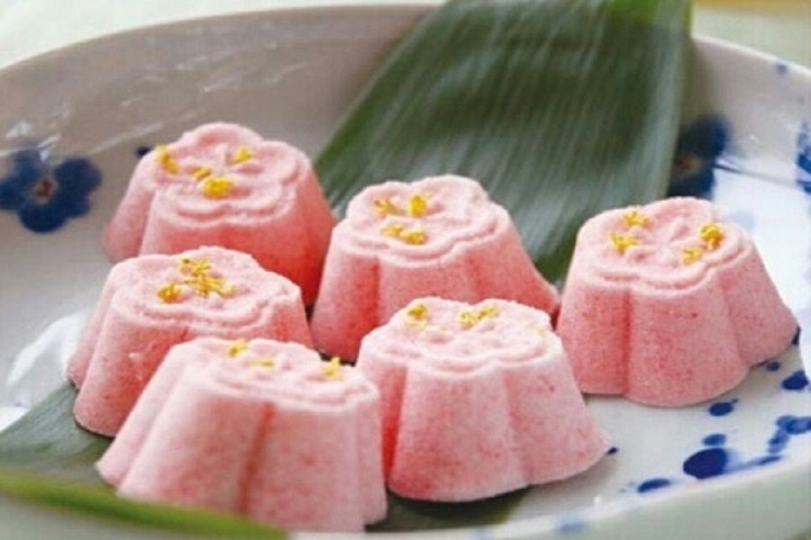

2、酥油饼
酥油饼为杭州著名风味特产，至今已有七八百年历史，号称“吴山第一点”。清代著名小说《儒林外史》一书中即已提及，并作赞誉。酥油饼用上等白面粉搀和白糖，用花生油煎制而成。其色泽金黄，层酥叠起，上尖下圆，形似金山，覆以细绵白糖，脆而不碎，油而不腻，香甜味美，入口即 酥。什么？你问哪里有卖？据说还是河坊街，谁去谁知道
回到头部 
3、猫耳朵
据传，清乾隆皇帝下江南，一次微服乘一叶小舟赏玩西湖。游得兴致勃勃时，天忽然下起了小雨，众人连忙避雨于小舟船舱内。大家等啊等， 可是雨越下越大，下了许久都不见停。几个时辰过去了，乾隆皇帝又饥又饿，忍不住问老渔翁有否吃食。老渔翁告诉乾隆有面但没有擀面杖，做不成面条。正发愁之际，老渔翁的小孙女抱着一只小花猫走来说：“没有擀面杖，我来用手捻。”于是小姑娘动手将面捻成块，状似小花猫的耳朵，小巧可爱。她把这形状怪怪的面条下锅煮熟后再浇上鱼虾卤汁端给乾隆吃。乾隆见面条不同寻常的模样，玲珑别致，吃后更觉得回味无穷，赶忙问小姑娘这叫什么面，小姑娘回答说是猫耳朵。乾隆非常喜欢这道点心，回京后即召小姑娘为其做“猫耳朵”。自此“猫耳朵”成了一道名点。现在的你如果想要一尝猫耳朵，也许知味观是个不错的选择。
回到头部 
4.老鸭煲
做老鸭煲的鸭子，一定要选麻鸭，煮出来的汤一丁点怪味都没有，煮鸭子汤，一定要用陶罐煮，味道才会正宗，先把浮在汤面上的血沫子去除，放生姜、大葱和一片粽叶，小火慢慢炖，大约煮半小时，将竹笋和少许海带放进去，放些火腿片进去，味道会更佳，继续煮20分钟，一锅香喷喷的老鸭汤就煮好了，一点味精不要放，原汁原味的鸭子汤让你喝过余味无穷。初春和夏季喝鸭子汤，清火，不油腻，温补，营养好，老少皆宜，确实是一道不错的保健汤呢。
回到头部
5.定胜糕
定胜糕是杭州著名的传统小吃，传说是南宋时百姓为韩家军出征鼓舞将士而特制的，将配置好的米粉放进特制的印版里，中间再放入红豆沙，蒸少许时间就 可以了。糕上有“定胜”两字，后就被称“定胜糕”。其味道微甜，颜色白里透红，松软清香，入口甜糯。据说河坊街有一家专门做定胜糕的小店，吃货不防探索一下。
回到头部